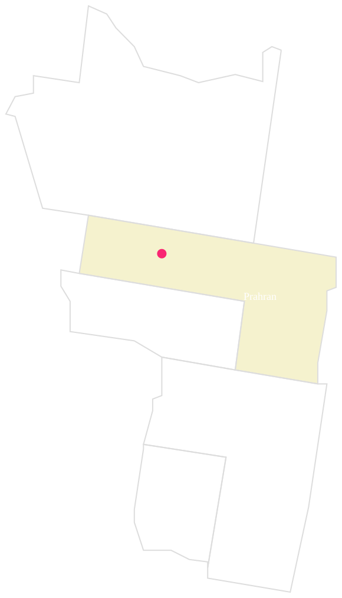

ORMs n SQL
A compile-time checked query builder and ORM
#[derive(Queryable, Selectable, Insertable)]
#[diesel(table_name = school)]
pub struct SchoolRow {
pub id: Vec<u8>,
pub name: String,
pub lon: f64,
pub lat: f64,
pub created_at: NaiveDateTime,
}
crates/diesel-demo/src/models.rs
#[derive(AsChangeset)]
#[diesel(table_name = school)]
pub struct SchoolChanges {
pub name: String,
pub lon: f64,
pub lat: f64,
}
crates/diesel-demo/src/models.rs
diesel::table! {
school (id) {
id -> Binary,
name -> Text,
lon -> Double,
lat -> Double,
created_at -> Timestamp,
}
}
crates/diesel-demo/src/schema.rs
#[derive(diesel::MultiConnection)]
pub enum AnyConnection {
Postgres(PgConnection),
Sqlite(SqliteConnection),
}
crates/diesel-demo/src/crud.rs
use bench_common::school::{School, SchoolInput};
use diesel::{pg::PgConnection, prelude::*, sqlite::SqliteConnection};
use diesel_migrations::{EmbeddedMigrations, MigrationHarness as _, embed_migrations};
use uuid::Uuid;
use crate::{
models::{SchoolChanges, SchoolRow},
schema::school,
};
pub fn create(conn: &mut AnyConnection, input: &SchoolInput) -> QueryResult<School> {
let new = School::new(input);
diesel::insert_into(school::table)
.values(SchoolRow::from(&new))
.execute(conn)?;
Ok(new)
}
crates/diesel-demo/src/crud.rs
CREATE TABLE school (
id BYTEA PRIMARY KEY,
name TEXT NOT NULL,
lon DOUBLE PRECISION NOT NULL,
lat DOUBLE PRECISION NOT NULL,
created_at TIMESTAMP NOT NULL
);
crates/diesel-demo/migrations/postgres/2026-11-22-000001_create_school/up.sql
const POSTGRES_MIGRATIONS: EmbeddedMigrations = embed_migrations!("migrations/postgres");
const SQLITE_MIGRATIONS: EmbeddedMigrations = embed_migrations!("migrations/sqlite");
crates/diesel-demo/src/crud.rs
pub fn connect(url: &str) -> anyhow::Result<AnyConnection> {
let mut conn = AnyConnection::establish(url)?;
let migrated = match &mut conn {
AnyConnection::Postgres(c) => c.run_pending_migrations(POSTGRES_MIGRATIONS).map(|_| ()),
AnyConnection::Sqlite(c) => c.run_pending_migrations(SQLITE_MIGRATIONS).map(|_| ()),
};
migrated.map_err(|e| anyhow::anyhow!(e))?;
Ok(conn)
}
crates/diesel-demo/src/crud.rs
pub fn retrieve(conn: &mut AnyConnection, id: Uuid) -> QueryResult<Option<School>> {
let row = school::table
.find(id.as_bytes().as_slice())
.select(SchoolRow::as_select())
.first(conn)
.optional()?;
Ok(row.map(School::from))
}
crates/diesel-demo/src/crud.rs
pub fn update(
conn: &mut AnyConnection,
id: Uuid,
input: &SchoolInput,
) -> QueryResult<Option<School>> {
diesel::update(school::table.find(id.as_bytes().as_slice()))
.set(SchoolChanges::from(input))
.execute(conn)?;
retrieve(conn, id)
}
crates/diesel-demo/src/crud.rs
.find and as_select() expand toThe query, written out
school::table
.filter(school::id.eq(id.as_bytes().as_slice()))
.select((
school::id,
school::name,
school::lon,
school::lat,
school::created_at,
))
.first::<SchoolRow>(conn)
What #[derive(Selectable)] generates
impl<DB: Backend> Selectable<DB> for SchoolRow {
type SelectExpression = (
school::id,
school::name,
school::lon,
school::lat,
school::created_at,
);
fn construct_selection() -> Self::SelectExpression {
(
school::id,
school::name,
school::lon,
school::lat,
school::created_at,
)
}
}
SchoolChanges::from expands toThe conversion
impl From<&SchoolInput> for SchoolChanges {
fn from(i: &SchoolInput) -> Self {
Self {
name: i.name.clone(),
lon: i.lon,
lat: i.lat,
}
}
}
crates/diesel-demo/src/models.rs
The update, with #[derive(AsChangeset)] written out
diesel::update(school::table.find(id.as_bytes().as_slice()))
.set((
school::name.eq(&input.name),
school::lon.eq(input.lon),
school::lat.eq(input.lat),
))
.execute(conn)?;
pub fn delete(conn: &mut AnyConnection, id: Uuid) -> QueryResult<bool> {
let deleted = diesel::delete(school::table.find(id.as_bytes().as_slice())).execute(conn)?;
Ok(deleted > 0)
}
crates/diesel-demo/src/crud.rs
pub async fn delete(conn: &mut AsyncPgConnection, id: Uuid) -> QueryResult<bool> {
let deleted = diesel::delete(school::table.find(id.as_bytes().as_slice()))
.execute(conn)
.await?;
Ok(deleted > 0)
}
crates/diesel-demo/src/crud_async.rs
#[dropshot::api_description]
pub trait SchoolApi {
type Context;
#[endpoint { method = POST, path = "/{library}/schools" }]
async fn create_school(
rqctx: RequestContext<Self::Context>,
path: Path<LibraryPath>,
body: TypedBody<SchoolInput>,
) -> Result<HttpResponseCreated<School>, HttpError>;
crates/school-api/src/api.rs
school_api_mod::stub_api_description()
.map_err(|e| anyhow!("{e}"))?
.openapi("Schools", semver::Version::new(0, 1, 0))
.write(&mut io::stdout())?;
crates/school-api/src/main.rs
async fn create_school(
rqctx: RequestContext<Database>,
path: Path<LibraryPath>,
body: TypedBody<SchoolInput>,
) -> Result<HttpResponseCreated<School>, HttpError> {
let library = path.into_inner().library;
let school = rqctx
.context()
.create(library, body.into_inner())
.await
.map_err(internal)?;
Ok(HttpResponseCreated(school))
}
crates/school-api/src/handlers.rs
pub async fn create(&self, library: Library, input: SchoolInput) -> Result<School> {
Ok(match library {
Library::Diesel => {
let pool = self.diesel.clone();
blocking(move || Ok(diesel_demo::crud::create(&mut *pool.get()?, &input)?)).await?
}
Library::DieselAsync => {
let mut conn = self.diesel_async.get().await?;
diesel_demo::crud_async::create(&mut conn, &input).await?
}
Library::Sqlx => sqlx_demo::postgres::create(&self.sqlx, &input).await?,
Library::Seaorm => seaorm_demo::crud::create(&self.seaorm, &input).await?,
Library::Rusqlite => {
let conn = Arc::clone(&self.rusqlite);
blocking(move || Ok(rusqlite_demo::create(&*lock(&conn)?, &input)?)).await?
}
Library::Turso => turso_demo::create(&self.turso.connect()?, &input).await?,
})
}
crates/school-api/src/database.rs
An async ORM built on sqlx
#[derive(Clone, Debug, PartialEq, DeriveEntityModel)]
#[sea_orm(table_name = "school")]
pub struct Model {
#[sea_orm(primary_key, auto_increment = false)]
pub id: Uuid,
pub name: String,
pub lon: f64,
pub lat: f64,
pub created_at: DateTimeUtc,
}
#[derive(Copy, Clone, Debug, EnumIter, DeriveRelation)]
pub enum Relation {}
impl ActiveModelBehavior for ActiveModel {}
crates/seaorm-demo/src/school.rs
pub async fn create(db: &impl ConnectionTrait, input: &SchoolInput) -> Result<School, DbErr> {
let new = School::new(input);
let model = school::ActiveModel {
id: Set(new.id),
name: Set(new.name.clone()),
lon: Set(new.lon),
lat: Set(new.lat),
created_at: Set(new.created_at),
};
school::Entity::insert(model).exec(db).await?;
Ok(new)
}
crates/seaorm-demo/src/crud.rs
pub async fn retrieve(db: &impl ConnectionTrait, id: Uuid) -> Result<Option<School>, DbErr> {
let model = school::Entity::find_by_id(id).one(db).await?;
Ok(model.map(School::from))
}
crates/seaorm-demo/src/crud.rs
pub async fn delete(db: &impl ConnectionTrait, id: Uuid) -> Result<bool, DbErr> {
let deleted = school::Entity::delete_by_id(id).exec(db).await?;
Ok(deleted.rows_affected > 0)
}
crates/seaorm-demo/src/crud.rs
pub async fn update(
db: &impl ConnectionTrait,
id: Uuid,
input: &SchoolInput,
) -> Result<Option<School>, DbErr> {
let Some(model) = school::Entity::find_by_id(id).one(db).await? else {
return Ok(None);
};
let mut model: school::ActiveModel = model.into();
model.name = Set(input.name.clone());
model.lon = Set(input.lon);
model.lat = Set(input.lat);
Ok(Some(model.update(db).await?.into()))
}
crates/seaorm-demo/src/crud.rs
async fn up(&self, manager: &SchemaManager) -> Result<(), DbErr> {
manager
.create_table(
Table::create()
.table(School::Table)
.col(pk_uuid(School::Id))
.col(string(School::Name))
.col(double(School::Lon))
.col(double(School::Lat))
.col(timestamp_with_time_zone(School::CreatedAt))
.to_owned(),
)
.await
}
crates/seaorm-demo/src/migrations/m20261122_000001_create_school.rs
SQL + some compile time checks
pub async fn create(db: impl PgExecutor<'_>, input: &SchoolInput) -> sqlx::Result<School> {
let new = School::new(input);
sqlx::query("INSERT INTO school (id, name, lon, lat, created_at) VALUES ($1, $2, $3, $4, $5)")
.bind(new.id)
.bind(&new.name)
.bind(new.lon)
.bind(new.lat)
.bind(new.created_at)
.execute(db)
.await?;
Ok(new)
}
crates/sqlx-demo/src/postgres.rs
pub async fn retrieve(db: impl PgExecutor<'_>, id: Uuid) -> sqlx::Result<Option<School>> {
let row: Option<SchoolRow> =
sqlx::query_as("SELECT id, name, lon, lat, created_at FROM school WHERE id = $1")
.bind(id)
.fetch_optional(db)
.await?;
Ok(row.map(school))
}
crates/sqlx-demo/src/postgres.rs
type SchoolRow = (Uuid, String, f64, f64, DateTime<Utc>);
crates/sqlx-demo/src/lib.rs
pub async fn update(
db: impl PgExecutor<'_>,
id: Uuid,
input: &SchoolInput,
) -> sqlx::Result<Option<School>> {
let row: Option<SchoolRow> = sqlx::query_as(
"UPDATE school SET name = $2, lon = $3, lat = $4 WHERE id = $1 \
RETURNING id, name, lon, lat, created_at",
)
.bind(id)
.bind(&input.name)
.bind(input.lon)
.bind(input.lat)
.fetch_optional(db)
.await?;
Ok(row.map(school))
}
crates/sqlx-demo/src/postgres.rs
pub async fn delete(db: impl PgExecutor<'_>, id: Uuid) -> sqlx::Result<bool> {
let deleted = sqlx::query("DELETE FROM school WHERE id = $1")
.bind(id)
.execute(db)
.await?;
Ok(deleted.rows_affected() > 0)
}
crates/sqlx-demo/src/postgres.rs
CREATE TABLE school (
id UUID PRIMARY KEY,
name TEXT NOT NULL,
lon DOUBLE PRECISION NOT NULL,
lat DOUBLE PRECISION NOT NULL,
created_at TIMESTAMPTZ NOT NULL
);
crates/sqlx-demo/migrations/postgres/0001_create_school.sql
static MIGRATIONS: Migrator = sqlx::migrate!("./migrations/postgres");
crates/sqlx-demo/src/postgres.rs
pub async fn connect(url: &str) -> anyhow::Result<PgPool> {
let pool = PgPool::connect(url).await?;
MIGRATIONS.run(&pool).await?;
Ok(pool)
}
crates/sqlx-demo/src/postgres.rs
Offset
SELECT id, name FROM school
ORDER BY id
LIMIT 1000 OFFSET 500000;
Keyset
SELECT id, name FROM school
WHERE id > $last_seen
ORDER BY id
LIMIT 1000;
pub fn page(conn: &mut AnyConnection, after: Uuid, size: i64) -> QueryResult<Vec<School>> {
let rows = school::table
.filter(school::id.gt(after.as_bytes().as_slice()))
.order(school::id)
.limit(size)
.select(SchoolRow::as_select())
.load(conn)?;
Ok(rows.into_iter().map(School::from).collect())
}
crates/diesel-demo/src/crud.rs
pub async fn page(db: &impl ConnectionTrait, after: Uuid, size: u64) -> Result<Vec<School>, DbErr> {
let models = school::Entity::find()
.filter(school::Column::Id.gt(after))
.order_by_asc(school::Column::Id)
.limit(size)
.all(db)
.await?;
Ok(models.into_iter().map(School::from).collect())
}
crates/seaorm-demo/src/crud.rs
pub async fn page(db: impl PgExecutor<'_>, after: Uuid, size: i64) -> sqlx::Result<Vec<School>> {
let rows: Vec<SchoolRow> = sqlx::query_as(
"SELECT id, name, lon, lat, created_at FROM school WHERE id > $1 ORDER BY id LIMIT $2",
)
.bind(after)
.bind(size)
.fetch_all(db)
.await?;
Ok(rows.into_iter().map(school).collect())
}
crates/sqlx-demo/src/postgres.rs
SQL libraries
pub fn create(conn: &Connection, input: &SchoolInput) -> rusqlite::Result<School> {
let new = School::new(input);
conn.prepare_cached(
"INSERT INTO school (id, name, lon, lat, created_at) VALUES (?1, ?2, ?3, ?4, ?5)",
)?
.execute(params![new.id, new.name, new.lon, new.lat, new.created_at])?;
Ok(new)
}
crates/rusqlite-demo/src/lib.rs
fn school(r: &Row<'_>) -> rusqlite::Result<School> {
Ok(School {
id: r.get(0)?,
name: r.get(1)?,
lon: r.get(2)?,
lat: r.get(3)?,
created_at: r.get(4)?,
})
}
crates/rusqlite-demo/src/lib.rs
const MIGRATIONS: &[&str] = &[include_str!("../migrations/0001_create_school.sql")];
pub fn open(path: &Path) -> rusqlite::Result<Connection> {
let conn = Connection::open(path)?;
let applied: i64 = conn.query_row("PRAGMA user_version", [], |r| r.get(0))?;
for (version, sql) in (1_i64..).zip(MIGRATIONS) {
if version > applied {
conn.execute_batch(sql)?;
conn.pragma_update(None, "user_version", version)?;
}
}
Ok(conn)
}
crates/rusqlite-demo/src/lib.rs
pub async fn create(conn: &Connection, input: &SchoolInput) -> Result<School> {
let new = School::new(input);
conn.execute(
"INSERT INTO school (id, name, lon, lat, created_at) VALUES (?1, ?2, ?3, ?4, ?5)",
(
new.id.as_bytes().to_vec(),
new.name.as_str(),
new.lon,
new.lat,
new.created_at.to_rfc3339(),
),
)
.await?;
Ok(new)
}
crates/turso-demo/src/lib.rs
fn school(row: &Row) -> Result<School> {
Ok(School {
id: Uuid::from_slice(&row.get::<Vec<u8>>(0)?)?,
name: row.get(1)?,
lon: row.get(2)?,
lat: row.get(3)?,
created_at: DateTime::parse_from_rfc3339(&row.get::<String>(4)?)?.to_utc(),
})
}
crates/turso-demo/src/lib.rs
Suburbs and schools from property-reporting
ST_Contains
let names: Vec<String> = sqlx::query_scalar(
"SELECT name FROM suburb WHERE ST_Contains(outline, ST_SetSRID(ST_MakePoint($1, $2), 4326))",
)
.bind(SEARCH_POINT.0)
.bind(SEARCH_POINT.1)
.fetch_all(&pool)
.await?;
crates/sqlx-demo/src/bin/geo.rs
let names: Vec<String> = suburb::table
.filter(st_contains(suburb::outline, point(SEARCH_POINT)))
.select(suburb::name)
.load(&mut conn)?;
crates/diesel-demo/src/bin/geo.rs
Both return ["Prahran"]
| PostGIS | Diesel (postgis_diesel) | sqlx / SeaORM |
|---|---|---|
geometry(Point, 4326) | Point | bind lon and lat, ST_MakePoint($1, $2) |
geometry(LineString, 4326) | LineString<Point> | bind WKT text, ST_GeomFromText($1, 4326) |
geometry(Polygon, 4326) | Polygon<Point> | bind WKT text, ST_GeomFromText($1, 4326) |
geometry(MultiPolygon, 4326) | MultiPolygon<Point> | bind WKT text, ST_GeomFromText($1, 4326) |
geography | sql_types::Geography, same Rust types | cast in SQL, location::geography |
| Reading back | the same types, e.g. point.x, point.y | ST_X, ST_Y, ST_AsText, ST_AsGeoJSON |
| Spatial functions | st_contains, st_d_within in the query DSL | written in the SQL string |
Sharing connections across requests
pub async fn connect() -> Result<Self> {
let diesel_url = postgres_url("talk_diesel");
diesel_demo::crud::connect(&diesel_url)?;
let turso_path = env::temp_dir().join("api-turso.db");
Ok(Self {
diesel: Pool::new(ConnectionManager::new(&diesel_url))?,
diesel_async: deadpool::Pool::builder(AsyncDieselConnectionManager::new(&diesel_url))
.build()?,
sqlx: sqlx_demo::postgres::connect(&postgres_url("talk_sqlx")).await?,
seaorm: seaorm_demo::crud::connect(&postgres_url("talk_seaorm")).await?,
rusqlite: Arc::new(Mutex::new(rusqlite_demo::open(
&env::temp_dir().join("api-rusqlite.db"),
)?)),
turso: turso_demo::open(turso_path.to_str().context("path is not UTF-8")?).await?,
})
}
crates/school-api/src/database.rs
Wrapped sync libs in spawn_blocking
The helper
async fn blocking<T: Send + 'static>(
work: impl FnOnce() -> Result<T> + Send + 'static,
) -> Result<T> {
tokio::task::spawn_blocking(work).await?
}
crates/school-api/src/database.rs
sqlx: many rows in one statement, so one trip. 55.8 µs/row down to 2.0
pub async fn create_many(
db: impl SqliteExecutor<'_>,
inputs: &[SchoolInput],
) -> sqlx::Result<Vec<School>> {
let new: Vec<School> = inputs.iter().map(School::new).collect();
let mut insert =
QueryBuilder::<Sqlite>::new("INSERT INTO school (id, name, lon, lat, created_at) ");
insert.push_values(&new, |mut row, s| {
row.push_bind(s.id)
.push_bind(&s.name)
.push_bind(s.lon)
.push_bind(s.lat)
.push_bind(s.created_at);
});
insert.build().execute(db).await?;
Ok(new)
}
crates/sqlx-demo/src/sqlite.rs
Diesel and rusqlite are wrapped in blocking, while the async libraries are called directly
Library::Diesel => {
let pool = self.diesel.clone();
blocking(move || Ok(diesel_demo::crud::create(&mut *pool.get()?, &input)?)).await?
}
Library::DieselAsync => {
let mut conn = self.diesel_async.get().await?;
diesel_demo::crud_async::create(&mut conn, &input).await?
}
Library::Sqlx => sqlx_demo::postgres::create(&self.sqlx, &input).await?,
Library::Seaorm => seaorm_demo::crud::create(&self.seaorm, &input).await?,
Library::Rusqlite => {
let conn = Arc::clone(&self.rusqlite);
blocking(move || Ok(rusqlite_demo::create(&*lock(&conn)?, &input)?)).await?
}
crates/school-api/src/database.rs
rusqlite: Arc<Mutex<rusqlite::Connection>>,
Library::Rusqlite => {
let conn = Arc::clone(&self.rusqlite);
blocking(move || Ok(rusqlite_demo::create(&*lock(&conn)?, &input)?)).await?
}
crates/school-api/src/database.rs
turso: turso::Database,
Library::Turso => turso_demo::create(&self.turso.connect()?, &input).await?,
crates/school-api/src/database.rs
create() call per row
let mut tx = pool.begin().await?;
for i in 0..rows {
sqlite::create(&mut *tx, &SchoolInput::numbered(i)).await?;
}
tx.commit().await?;
crates/sqlx-demo/src/main.rs
let tx = conn.transaction()?;
for i in 0..rows {
rusqlite_demo::create(&tx, &SchoolInput::numbered(i))?;
}
tx.commit()?;
crates/rusqlite-demo/src/main.rs
| Library | Time | µs/row |
|---|---|---|
| rusqlite | 9.4 s | 3.1 |
| diesel | 27.7 s | 9.2 |
| turso | 51.9 s | 17.3 |
| sqlx | 169.6 s | 56.5 |
| seaorm | 206.6 s | 68.9 |
| sqlx | rusqlite | |
|---|---|---|
| API | async, the same for Postgres, MySQL and SQLite | sync, SQLite only |
| Blocking calls | hidden on a worker thread for you | yours to move off the runtime, e.g. spawn_blocking |
| Cost | a thread hop on every statement | one hop per batch |